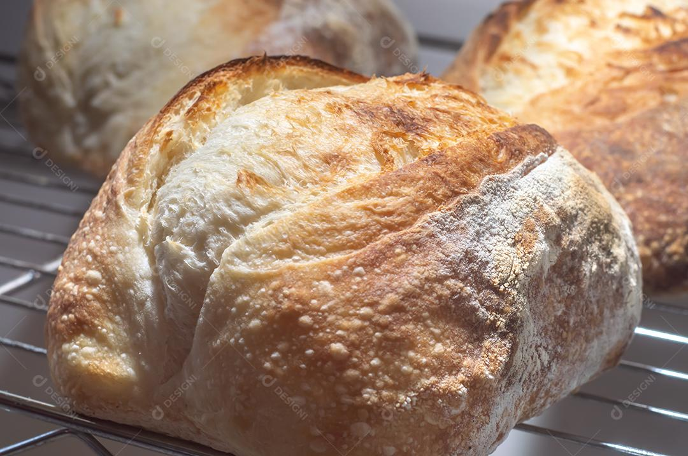

A fermentação natural está de volta às padarias e cozinhas dos homebakers do mundo inteiro, mas, afinal, o que é o fermento natural? Qual a diferença do fermento natural, fermento biológico e o fermento químico? Quais as diferenças que podemos observar nos pães feitos com levain? Fermento natural é a mesma coisa que fermento selvagem, sourdough, levain, massa madre, massa mãe?
